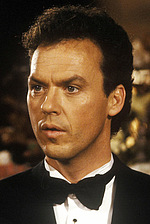
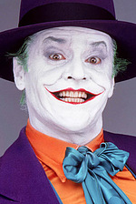
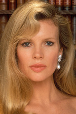

У головних ролях · Персонажі
У фільмі "Бетмен" 1989 року в головних ролях зіграли: Майкл Кітон (Брюс Вейн / Бетмен), Джек Ніколсон (Джек Нап'єр / Джокер) та Кім Бейсінгер (Віккі Вейл).

Майкл Кітон: Брюс Вейн / Бетмен

Джек Ніколсон: Джек Нап'єр / Джокер

Кім Бейсінгер: Віккі Вейл
До акторського складу також увійшли: Роберт Вул (Александр Нокс), Пат Хінгл (комісар Гордон) та Біллі Ді Вільямс (Харві Дент).